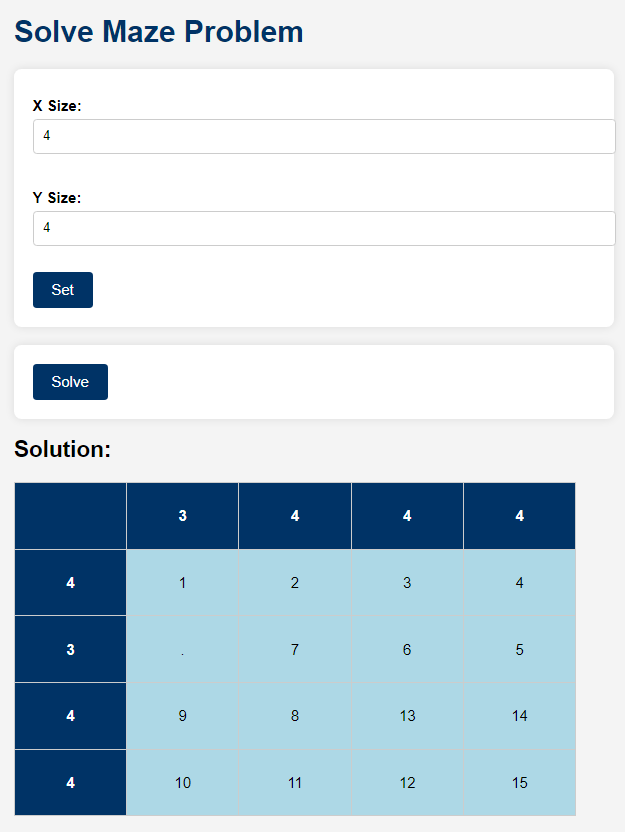

Maze Puzzle
This is a web-based puzzle solver that uses a backtracking algorithm to find a path through a user-defined grid that satisfies
constraints on the number of cells visited in each row and column.
Features
Dynamic Grid Creation Set the grid size (number of rows and columns) according to your requirements.
Editable Constraints Specify the number of cells to visit for each row and column through input fields.
Solution Visualization Displays the solution path directly on the grid if a valid solution is found.
Backtracking Algorithm Uses a recursive backtracking approach to explore possible paths through the grid.

User Interface
Link to GitHub
Back to Projects